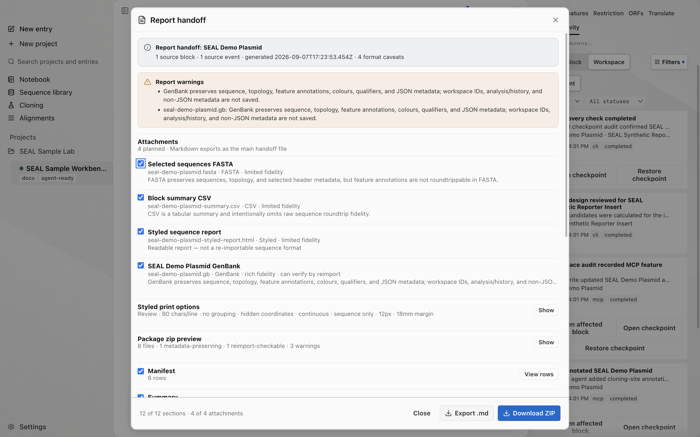

Reports and packages
Screenshots and recordings show the direct edition. Compare editions.
Export reports and zipped packages. Write a single format from the CLI, or build one package that bundles the report, the sequences, and a manifest.
Watch the walkthrough
Choose report attachments, download a ZIP, and confirm the completed export in Activity.
0:54 · AI narrationDownload video (12.3 MB)English captions
Read the transcript
Open Synthetic Reporter and select Synthetic Reporter DNA. Press Command K to open the command palette, type Build report, and choose that command.
Report handoff opens for the selected source block. Start by checking the name at the top. Then review Attachments. This example includes the selected sequence as FASTA, a block-summary CSV, a styled sequence report, and a GenBank file. The dialog describes what each format preserves.
Expand Package zip preview to inspect the files that will be included. The package brings the report, selected attachments, and supporting metadata together in one download. Review the selection before clicking Download ZIP.
After the download, open Activity in the Inspector. Find Report package exported and confirm that the event is marked completed.
Download a report and review its Activity event
Package the selected reporter block, then check the export record in the Inspector.
- Open Synthetic Reporter and select Synthetic Reporter DNA.
- Press ⌘K, type Build report, and choose the command.
- In Report handoff, confirm that the source block is Synthetic Reporter DNA.
- Under Attachments, review Selected sequences FASTA, Block summary CSV, Styled sequence report, and the block's GenBank file. Read the format notes and select the files you want.
- Expand Package zip preview. Check that its file list matches your selections, including the report and supporting metadata.
- Click Download ZIP and wait for the download to finish.
- Open Activity in the Inspector. Find Report package exported and confirm that the event is marked completed.
The package contents depend on the selected blocks and attachments. Keep the ZIP with your review notes so you can identify the exported files later.
From workspace to a handoff package
Export a report
Run seal export with a format subcommand to write blocks from the shared workspace. Each subcommand prints to stdout, or writes a file with --output.
| Subcommand | Output |
|---|---|
csv | A CSV summary table, one row per block. |
markdown | A Markdown document, one section per block. |
slide-summary | Compact slide-friendly Markdown, one bullet per block. |
genbank | GenBank for one block, all blocks, or one file per block. |
workspace-json | A full JSON dump of every block in the scratch workspace. |
gff3 | A GFF3 document, one ##sequence-region per block and one row per feature, with an optional ##FASTA section. |
seal export markdown --include-analysis --output summary.mdSome subcommands take extra flags: csv accepts --include-features, markdown accepts --include-analysis, and slide-summary accepts --title. For GenBank, write one file with --output or one file per block with --output-dir.
seal export genbank --output all-blocks.gb
seal export genbank --block block-abc --output plasmid.gb
seal export genbank --output-dir genbank-exportWhen a subcommand writes a file, it returns a small JSON receipt with the format, the block count, and the path.
{
"ok": true,
"format": "genbank",
"count": 5,
"path": "genbank-export"
}To export from the desktop workspace, set SEAL_DB_PATH to the active database path shown in SEAL's Agent Setup. See CLI setup for installation and Architecture for path resolution.
Report packages
A report package bundles a report, selected attachments, and a manifest in one ZIP. In the desktop app, choose the attachments in Report handoff. Over MCP, use export_package: pass block names or IDs to blocks, or omit it to package the MCP scratch workspace.

{
"tool": "export_package",
"arguments": {
"blocks": ["seal-synthetic-assembly"],
"includeBase64": true
}
}The package file list depends on the export options. It can include:
report.md: the Markdown report.sequences.fasta: the sequences as FASTA.summary.csvandfeatures.csv: the summary table and feature list.- Per-block GenBank files under
genbank/. validation.md: a note on which files are lossless.manifest.json: the file list with sizes, CRC32 checksums, and source block and event ids.
The manifest records, for each file, whether it is lossless and whether it should be verified by reimport. GenBank is the metadata-preserving biological export. FASTA and CSV are lossy summaries by design. Set includeBase64 to false to return only the manifest and validation metadata without the zip payload.
Handoff to an agent
A package gives an agent the report, exported sequences, and manifest together. Its contents reflect the selected blocks and export options.
To verify a handoff end to end, reimport the GenBank files from the package and confirm they round-trip.
seal import genbank-export/plasmid.gbSee the agent control plane for how agents read and write the same local workspace, and the MCP tool reference for the export tools. For output field shapes, see the IO contract.
Next steps
- Notebook: keep a persistent, linked record of an analysis alongside the packages you hand off.